Состав и вид мнемосхем определяется разработчиками на этапе проектирования в Studio. Внешний вид элементов мнемосхем и принцип их функционирования может быть скорректирован разработчиками прикладного проекта и отличаться от используемого по умолчанию. Типовые элементы мнемосхем включают:
Поле вывода (Output Field):
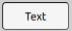
Поле вывода служит для отображения текстовой/числовой информации, например, названий линий и объектов, может быть результатом измерений, таких как температура, давление или скорость. Значение обновляется в режиме реального времени.
Основные свойства:
Свойство значения: Связывается с переменной, которая содержит текущее значение параметра.
Единицы измерения: Необходимо установить единицу, в которой будет отображаться значение. Примеры возможных единиц измерения:
Измерение
Единица измерения
Температура
°C
Давление
мм. рт. ст.
Влажность
%
Направление
° (градус)
Скорость
м/с
Расстояние
Км
Напряжение
кВ
Частота
Герц
Цвет фона/шрифта: Настраивается для изменения цвета в зависимости от диапазонов значений (например, красный для аварийных значений).
Шрифт: Можно настроить размер и стиль шрифта для удобного чтения.
Обновление: Обновляется в режиме реального времени или по заданному интервалу.
Поле ввода-вывода (Input-Output Field):
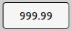
Этот элемент используется как для отображения, так и для ввода новых значений параметров, например уставок, технологических пределов и т. д.
Основные свойства:
Свойство значения: Связывается с переменной, которая может принимать новое значение.
Диапазон значений: Настраивается диапазон допустимых значений для ввода.
Тип данных: Можно указать тип данных, например, целое или с плавающей точкой.
Подтверждение ввода: Настраивается действие для подтверждения ввода (например, клавиша Enter или кнопка OK).
Обработка ошибок: Включение механизмов валидации для проверки корректности введенных данных.
Кнопка (Button):
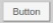
Элемент используется для инициирования команды, например включения или отключения оборудования. Наиболее часто кнопки используются для приема команд оператора, например включение технологического агрегата. Подача команды осуществляется щелчком по кнопке. В определенных случаях могут использоваться другие события, например щелчок правой кнопкой мыши, отпускание кнопки и т.д. Конфигурируется разработчиками на этапе проектирования в Studio.
Основные свойства:
Свойство события: Связывается с переменной или командой, которая активируется при нажатии кнопки.
Цвет и состояние: Кнопка может менять цвет в зависимости от состояния (активна или неактивна, нажата или не нажата).
Подпись/Текст: Можно настроить текст на кнопке, например "Включить", "Отключить".
Анимация нажатия: Можно настроить визуальные эффекты нажатия для более интуитивного управления.
Чекбокс (Checkbox):
Используется для включения или выключения функций, таких как контроль пределов параметра. Наиболее часто чекбокс используется для изменения каких-либо настроек включения/выключения каких-то функций, например контроль границ технологических коридоров.
Основные свойства:
Свойство значения: Связывается с булевской переменной, которая изменяется при установке или снятии галочки.
Подпись: Текст рядом с чекбоксом, описывающий его назначение (например, "Включить контроль пределов").
Цветовое изменение: Можно настроить изменение цвета в зависимости от состояния (включено/выключено).
Индикатор сообщений (Message Indicator):
Этот элемент используется для индикации тревожных и предупреждающих сообщений.
Основные свойства:
Состояние: Связывается с переменной, которая отображает наличие сообщения (ошибка, тревога, предупреждение).
Цветовая индикация: Цвет индикатора меняется в зависимости от приоритета сообщения (красный - тревога, желтый - предупреждение, черный - ошибка).
Мигание: Настраивается мигание индикатора до квитирования сообщения оператором.
При появлении сообщения, элемент появляется и мигает пока сообщение не будет квитировано оператором. После квитирования сообщения элемент перестает мигать, но продолжает отображаться пока событие вызвавшее сообщение не уйдет. Внешность элемента меняется в зависимости от типа сообщения:
Ошибка
Тревога
Предупреждение
Если по компоненту имеется несколько сообщений, то элемент принимает вид в соответствии с сообщением имеющим наибольший приоритет: (error, alarm, warning - по убыванию). Неквитириованные сообщения имеют более высокий приоритет, чем квитированные. Это означает, что если по компоненту имеются одновременно сообщения типа error и warning, но сообщение error уже квитировано, то элемент будет мигать и иметь тип warning, несмотря на то, что error имеет более высокий приоритет.
Выпадающий список:
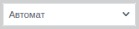
Позволяет оператору выбирать значение из нескольких предложенных вариантов. Это может быть переключение режима работы, изменение источника уставки, выбор рецепта или технологической карты и т.д.
Основные свойства:
Список вариантов: Задается набор значений для выбора.
Свойство значения: Связывается с переменной, которая изменяется при выборе оператора.
Подпись: Можно добавить описание списка, например, "Выберите режим работы".
Цвет и стиль: Настраиваются цвета элементов списка.
Выключатель
Нажатие левой кнопки мыши открывает панель:
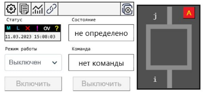
Рисунок 6. Информационное окно выключателя
В верхнем левом углу можно увидеть текущий статус и время, когда этот статус был изменен. Также можно наблюдать текущую позицию и какую команду задал оператор. В выпадающем списке “Режим работы” можно изменить режим и, таким образом, подать команду на включение или отключение выключателя (команда имеет информативный характер и подает команду только для оператора).
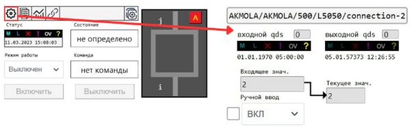
Рисунок 7. Интерактивное действие в открывшемся окне выключателя
Нажатие ЛКМ на “шестеренку” открывает меню настроек, где пользователь может видеть адрес объекта в проекте, состояние и значение сигнала, а также имеет возможность переводить в ручной ввод, выбирая соответствующий флажок, и режим в выпадающем окне, которое передается в поле “текущее значение”.
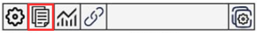
Рисунок 8. Функция копирования пути к архиву
С помощью следующей кнопки справа, можно копировать в буфер обмена путь к архиву, который дает возможность следить за изменением состояния сигнала, в трендах, при вставлении пути в нужную группу. Подробнее функционал описан в разделе “Тренды”.
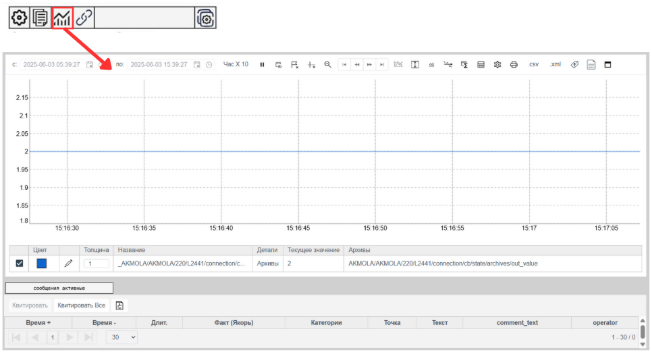
Рисунок 9. Тренд с информацией о изменении состояния выключателя
Следующая кнопка в виде графика, при нажатии, предоставляет быструю возможность открытию представления архивных данных в виде трендов.
Нажатие ЛКМ на следующую кнопку открывает окно для настройки таких параметров для динамической окраски мнемосхемы. В полях ввода-вывода можно указывать поля “i” и “j”, пути к объектам, к которым подключается объект. При нажатии на кнопку “Сменить поля”, заполненные поля меняются местами. Также, можно управлять состоянием выключателя и записью архивных данных значения, выбирая подходящие флажки. Последнее поле ввода-вывода показывает класс напряжения, к которому относится объект.
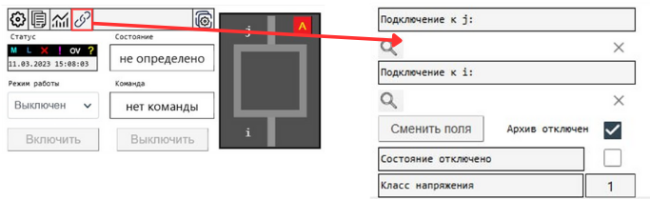
Рисунок 10. Окно настройки параметров выключателя
Разъединитель
У разъединителя такие же панели:
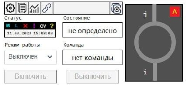
Рисунок 11. Информационное окно разъединителя
Заземляющий нож
Такие же панели как у Выключателя и Разъединителя, за исключением того, что у заземляющего ножа только одно поле I
При нажатии ЛКМ на Телеизмерения на ВЛ и СШ открываются окна с параметрами сигнала, такие так выходные значения и лимиты. Для ручной настройки значений, нужно на “шестеренку”, и в открывшемся окне выбрать выбрать нужные флажки, и ввести значения в полях:
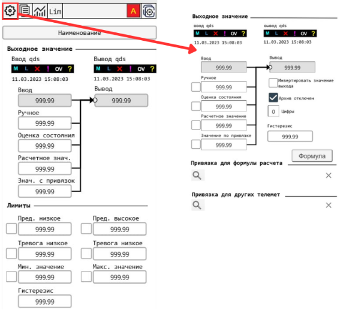
Рисунок 14. Информационно-интерактивное окно воздушной линии
Также, нажав на кнопку “Lim” можно задавать высокие и низкие ограничения для значения:
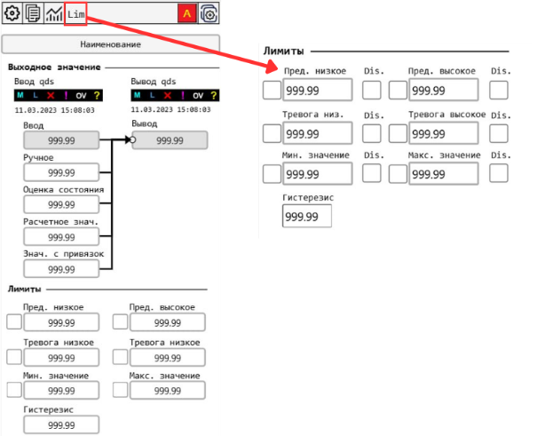
Рисунок 15. Окно для настройки лимитов значения телеметрии
Voltage transformer
Для настройки параметров трансформатора напряжения нужно нажать ПКМ на прототип, после чего открывается панель:
Нажатие ПКМ на трансформаторы и автотрансформаторы открывается панель, где настраиваются поля: K – подключение к первой обмотке, J- второй, I - третьей:
Нажатие ПКМ на прототип генератора открывает окно для настройки параметров:
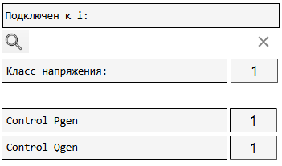
Рисунок 18. Окно настройки параметров генератора
Работа с диспетчерскими щитами
Схема диспетчерского щита создается на основе нормальной схемы электрических соединений объектов, которые входят в операционную зону диспетчерского центра (ДЦ). Диспетчерский щит обеспечивает контроль ключевых параметров электроэнергетического режима и возможность наблюдать за изменениями в топологии электрической сети.
Схема отображается в виде упрощенной коммутационной схемы, показывающей состояние оборудования и соединений. Например, коммутационные аппараты и их состояние (включен/отключен) упрощенно представляются в виде последовательности соединений. Соединительные линии между объектами изображаются с минимальным количеством изломов, а толщина линий зависит от класса напряжения.
Диспетчерский щит имеет несколько слоев, позволяющих настраивать видимость информации, например:
Границы энергорайонов,
Линии разных классов напряжения (500, 220, 110, 35 кВ),
Аварийно-предупредительная сигнализация,
Показатели реактивной мощности,
Оценка состояния оборудования.
Открыть диспетчерский щит можно, как было показано в п. 3.1.
При двойном нажатии левой кнопкой мыши на название подстанции, открывается мнемосхема подстанции.
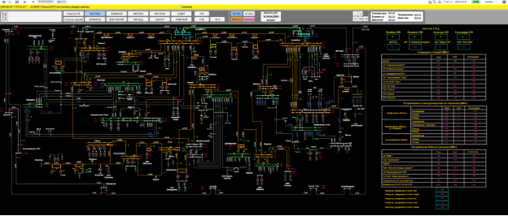
Рисунок 19. Мнемосхема диспетчерского щита
Основные элементы диспетчерского щита
Line
Нажатие ПКМ на название линии открывает информационное окно выбранной линии, где можно получить такие данные, как актуальные значения перетоков мощности, состояние и значения ОС. Окно содержит интерактивные кнопки, при нажатии которых открываются соответствующие параметры. При нажатии ЛКМ на кнопку “Инф” можно получить паспортные данные линии, содержащую такую информацию, как тип линии, номинальный ток и другие параметры.
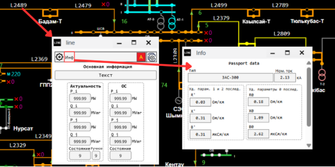
Рисунок 20. Информационное окно прототипа line
Нажатие ЛКМ на иконку “шестеренки” открывает окно настройки прототипа, где можно управлять состоянием линии, редактируя значения: значения ОС, ввод в ручной режим, длина, класс напряжения, состояние, тип линии, и изменение привязок: